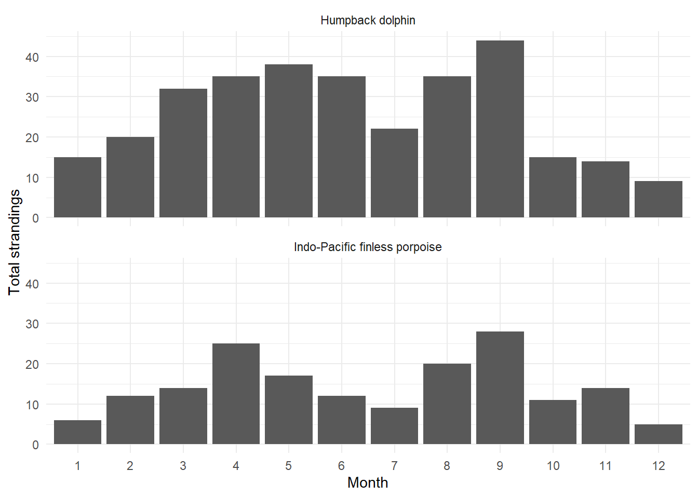
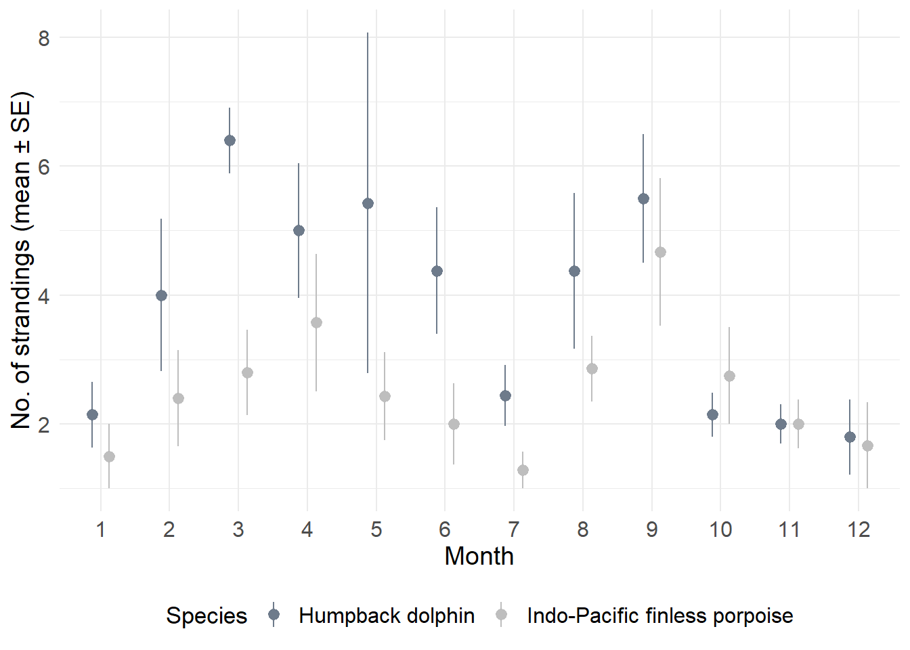

library(tidyverse)
library(ggpubr)
library(sf)
library(purrr)
# Read the cleaned stranding dataset from the project Data folder.
dat_str <- read.csv("../Data/Strandings_flagged_geo_corrected.csv")
# Keep only valid records and the focal species for this analysis.
dat_str <- dat_str |>
filter(flag == FALSE | is.na(flag), Year >= 2017) |>
filter(Species_co %in% c("Humpback dolphin", "Indo-Pacific finless porpoise"))
# Species composition summary: check whether one species dominates the record set.
dat_str |>
count(Species_co, name = "n") |>
arrange(desc(n)) Species_co n
1 Humpback dolphin 314
2 Indo-Pacific finless porpoise 173# Monthly totals by species: a first pass at seasonality before deeper summaries.
dat_str |>
ggplot(aes(x = as.factor(Month))) +
geom_bar() +
facet_wrap(~Species_co, ncol = 1) +
labs(x = "Month", y = "Total strandings") +
theme_minimal()
# Mean monthly stranding rates with uncertainty (SE) for both species
dat_str |>
group_by(Year, Month, Species_co) |>
summarise(count = n(), .groups = "drop") |>
group_by(Month, Species_co) |>
summarise(
n = mean(count),
n_se = sd(count) / sqrt(length(count)),
.groups = "drop"
) |>
ggplot(aes(x = as.factor(Month), y = n, colour = Species_co)) +
geom_pointrange(
aes(ymin = n - n_se, ymax = n + n_se),
position = position_dodge(width = 0.5)
) +
theme_minimal() +
scale_colour_manual(
values = c(
"Humpback dolphin" = "lightsteelblue4",
"Indo-Pacific finless porpoise" = "gray"
)
) +
theme(
axis.text.x = element_text(size = 12),
axis.text.y = element_text(size = 12),
axis.title.x = element_text(size = 14),
axis.title.y = element_text(size = 14),
legend.text = element_text(size = 12),
legend.title = element_text(size = 13),
legend.position = "bottom"
) +
labs(x = "Month", y = "No. of strandings (mean ± SE)", colour = "Species")